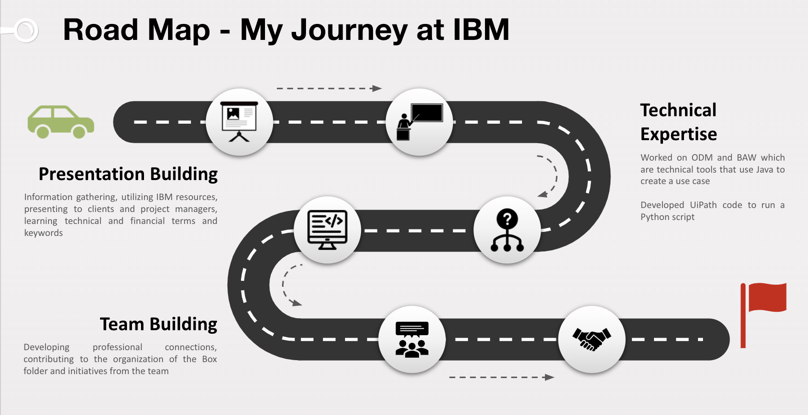
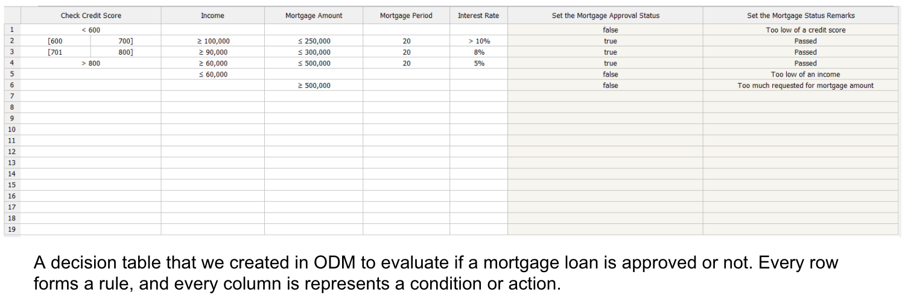
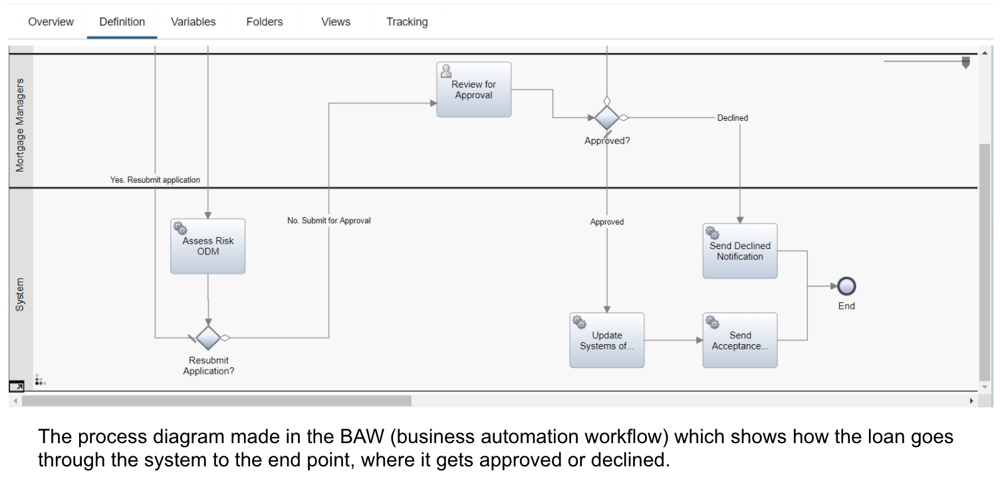
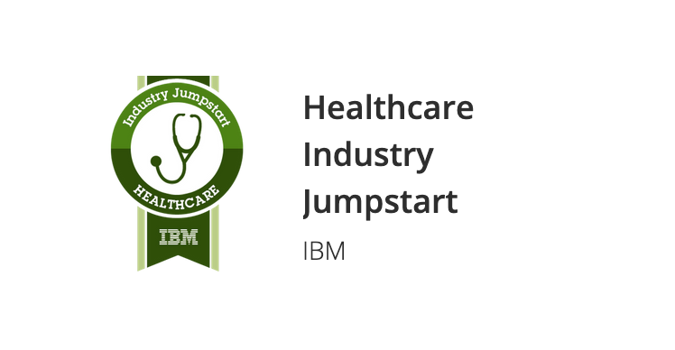
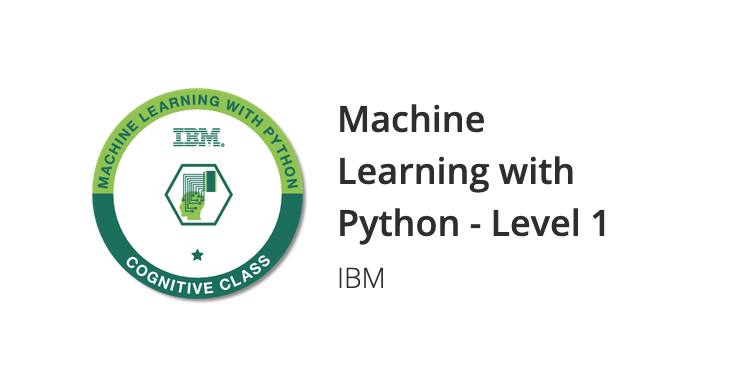
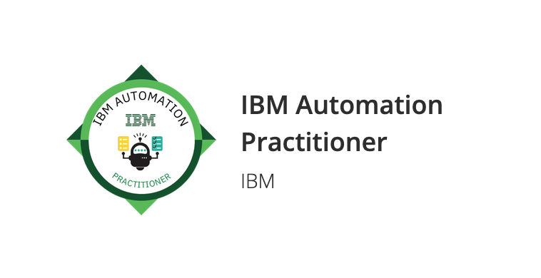
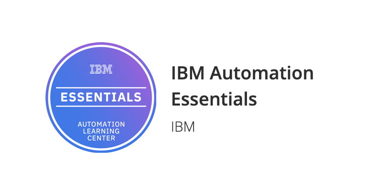
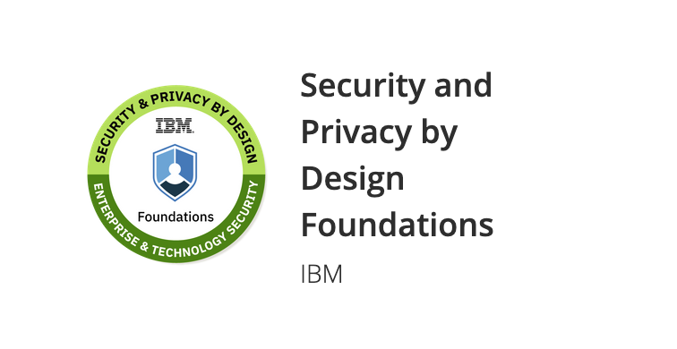
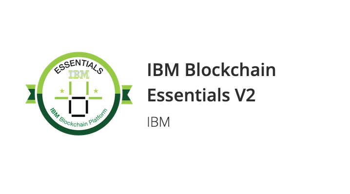
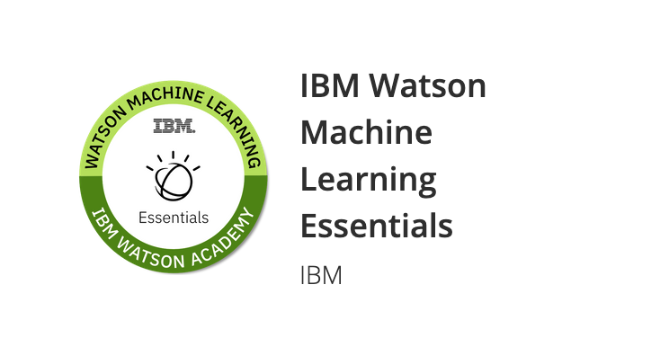

For Summer 2020, I was able to work as a RPA Developer intern to develop my technical skills within IBM - GBS sector in the CPA (Cognitive Process Automation) team.
I was continuously learning and developing throughout my coop, which inspired the creation of this roadmap. I wanted to show my journey throughout this term as an overview.

For our first introduction project, we performed a market research task to analyze a company in order to develop the skills a consultant would need to know in order to take on a new client or project. - The main three aspects of a good presentation are: the actual content, the slide presentation design, and presentation skills.
One element of this project that I feel was significantly improved over the coop term was my presentation skills.
BEFORE:
AFTER:
Being more confident by speaking from experience and being well prepared.
Directly addressing my audience and delivering a presentation personalized to my audience, which keeps the focus and interest of the audience.
Another aspect of giving a good presentation, which is slide design and layout, has also improved
(Some slides are omitted to keep conciseness and to keep confidentiality)
BEFORE SLIDES (LEFT):
Our slide presentation designed lacked in comparison to the IBM standards and templates
Struggled with keeping a consistent message throughout
AFTER SLIDES (RIGHT):
More visually appealing slides which doesn’t take away from the presentation and supports our presentation content
Conscious effort to try to have the presentation revolve around a mission statement, and answer the question of “why does what I’m talking about matter to the audience I am speaking to?”
What we worked on: We were developing a system that processes mortgage loan applications automatically based on some rules that we implemented through the ODM. Learning ODM and BAW gave us another perspective on how automation can be used to simplify a decision making process.


The main lessons learned:
Learning how to use a new internal IBM technology and managing the workload. It was a unique learning process because our only way to get skilled up was by following tutorials, Youtube videos and online documentation. When we were facing a roadblock, we often had to reach out the the person of expertise. With COVID, we were finding it harder than ever to connect with others and people were often too busy, which meant we had to find a different way to resolve our issues without taking away valuable time from team members.
We decided to create a RAID log, which stands for Risk, Action, Issue, Decision. We used this to keep track of dates, key decisions or questions and developments to our project. Our manager could easily refer to this document when he had free time to check our progress, and we would update it frequently.
Contributing a different type of use case. Applications to request for loans or to approve something can often be something that only has a few possible outcomes and can be determined by some rules. In this case, we have learned a different way that processes can be automated and also in the future if there are any clients that have a similar request, we have provided a potential demo or use case.
Throughout our coop, we always found ourselves busy since we were working on projects or planning for our next one. However, we were able to take some time for ourselves to use IBM’s learning platform, YourLearning which offers badges, classes and more. Below are the badges that I’ve earned.







The 3 badges I learned the most from:
Jumpstart: Jumpstart was a 4 week long course, and every week we focused on different modules about the healthcare industry. Something I’ve noticed is that the healthcare community can be hard to get into, which is something this Jumpstart course helped to resolve. They had a slack group, a IBM community and lots of documentation that is accessible by anyone.
Machine learning with python: This course took a few days, and was structured with lots of videos and quizzes to test our knowledge. It went through many different machine learning algorithms which gave me a good introduction to machine learning, which is a definitely a potential study option in my later university years.
Automation practitioner: This is one of the most important badges earned for this coop as it provided us with the foundations of being part of the automation team. It was a one day course with a quiz which allowed us to kickstart our roles within the team.
For our final project, we were developing a python script that gets information from a query, which is then run through a UiPath sequence, which automatically carries out the task.
I learnt:
To be able to apply my UiPath learning into a real client project and use a Python extension
Apply skills we already have (Python, queries) and use new skills (UiPath) to solve a client’s problems and apply automation
Troubleshooting by debugging, retracing steps and resourcefully using online resources to solve an error in which the Python script would not run on the UiPath platform
Use UiPath to resolve a client problem by developing code to automate a query procedure
Develop teamwork skills and learn to work collaboratively virtually, as well as building professional connections
Personal learning and taking courses and earning badges that may help me in the future when deciding my minor/options
Developed a potential use case with ODM and BAW that could be used with clients or to demonstrate IBM’s services
Overall, I had an incredible first coop experience at IBM. My biggest takeaway from the whole summer was to always iteratively improve what you work on. Whether you are working on yourself for self-development, or a big project for your manager, there is always room for improvement. Never settle! I hope you find this page insightful, and feel free to contact me with any questions or to discuss anything from this page.